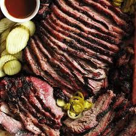
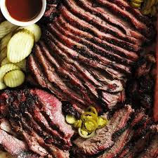

Welcome to my recipe website!
This website is a demonstration of what I have learned so far using the Odin Project. Basic html will be used to markup a webpage including(but not limited to)
recipes to some of my favorite dinners and desserts, with pictures to accomodate them for reference. Again, this is a barebones website using basic html without css or javascript
for testing/demonstration purposes.
Thank you for visiting!
 
